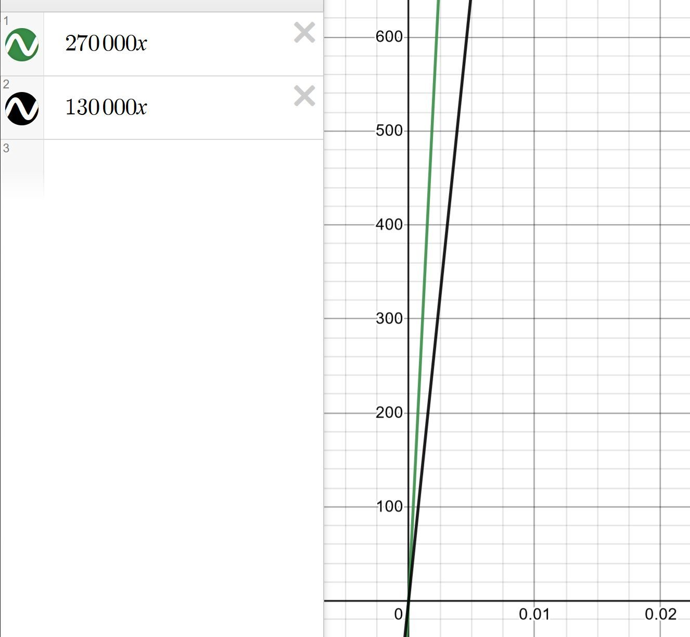
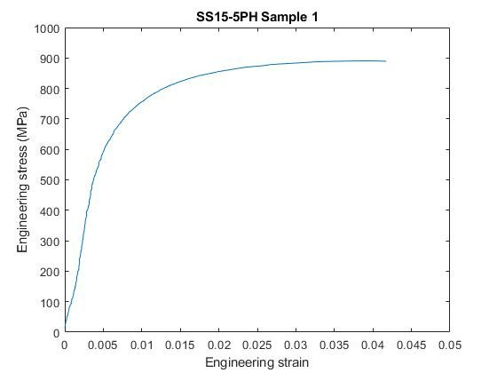
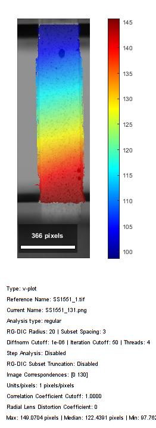
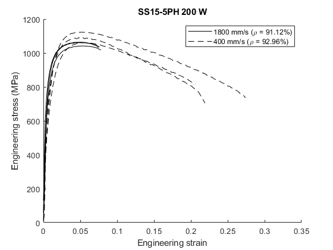
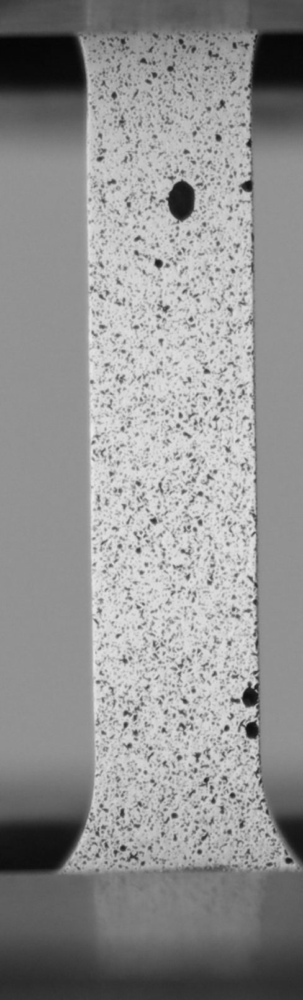

How do printing parameters change what comes out? I characterized additively manufactured 15-5PH stainless steel across process settings — linking mechanical properties to internal porosity using optical strain measurement and a computer-vision pore-analysis pipeline.

Additive manufacturing of metals trades the predictability of wrought stock for enormous design freedom — but process parameters (energy input, scan strategy) leave behind internal porosity that drives where and how a part fails. To use AM structurally, you need to connect process → porosity → mechanical behavior with real data.
I ran tensile tests on 15-5PH precipitation-hardened stainless steel specimens printed across a range of process parameters, capturing full-field deformation with digital image correlation rather than relying on a single extensometer:
To explain the mechanical scatter, I wrote a MATLAB image-analysis pipeline that segments microscopic pores from cross-sectional micrographs — quantifying pore size, count, and distribution so porosity can be correlated directly against measured strength and failure location. This ties the destructive test data back to the microstructure the process produced.




This project combined hands-on materials testing with statistical process control and custom image analysis — the kind of closed loop between manufacturing, measurement, and code that underpins rigorous design-for-manufacturing decisions. It's also where my optical strain measurement and computer-vision toolkit matured.